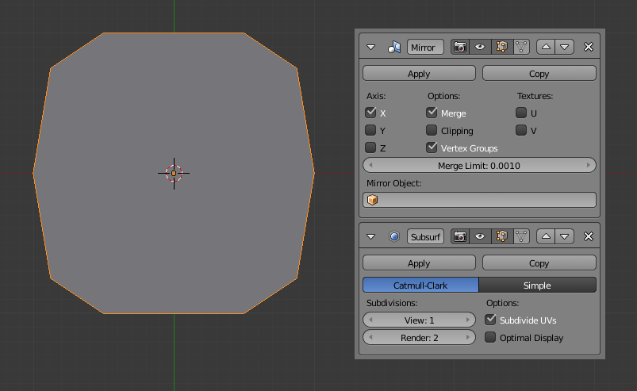

Mirror Modifier¶
The Mirror Modifier mirrors a mesh along its local X, Y and/or Z axes, across the Object Origin. It can also use another object as the mirror center, then use that object's local axes instead of its own.
Options¶
Mirror Modifier.
Axis¶
The X, Y, Z axis along which to mirror, i.e. the axis perpendicular to the mirror plane of symmetry.
To understand how the axis applies to the mirror direction, if you were to mirror on the X axis, the positive X values of the original mesh would become the negative X values on the mirrored side.
You can select more than one of these axes. And will then get more mirrored copies. With one axis you get a single mirror, with two axes four mirrors, and with all three axes eight mirrors.
Options¶
- Merge
- Where a vertex is in the same place (within the Merge Limit distance) as its mirror it will be merged with the mirrored vertex.
- Clipping
Prevents vertices from moving through the mirror plane(s) while the user is transforming them in Edit Mode.
If Clipping is enabled but vertices are beyond the mirror plane and outside of the Merge Limit, the vertices will not be merged. But as soon as the vertices are within Merge Limit they are snapped together and cannot be moved beyond the mirror plane.
Ghi chú
Vertices on the mirror plane will be unable to move away from the mirror plane as long as Clipping is enabled. You must disable Clipping to be able to move the vertices along the mirror axis again.
- Vertex Groups
When enabled, the Mirror Modifier will try to mirror existing vertex groups.
A very nice feature, but one that has very specific prerequisites:
- The vertex groups you want to mirror must be named following the usual left/right pattern (i.e. suffixed by something like ".R", ".right", ".L", etc.).
- The mirror side vertex group must already exist (it will not be created automatically). It must also be completely empty (no vertices assigned to it).
Textures¶
- Flip UV
The Flip U and Flip V options allows you to mirror the UV texture coordinates across the middle of the image.
E.g. if you have a vertex with UV coordinates of (0.3, 0.9), its mirror copy will have UV coordinates of (0.7, 0.1).
- UV Offsets
Amount to shift mirrored UVs on the U/V axis.
It's useful for baking (as overlapping UVs can cause artifacts to appear in the baked map), so the UVs can be moved outside the image and not used for baking, but still be used for display.
Further Options¶
- Merge Limit
- The maximum distance between a vertex and its mirror copy before they are merged together. In other words, a vertex may be half this distance away from the mirror plane before it snaps to it.
- Mirror Object
- An Object Selector to select an object (usually an empty), to be used as the reference for the mirror process: its center and axes will drive the plane(s) of symmetry. You can of course animate its position/rotation to animate the mirror effect.
Hints¶
Using the Mirror Modifier with a Subdivision Surface Modifier¶
When using the Mirror Modifier along with a Subdivision Surface modifier, the order in which the modifiers are placed is important.

Subdivision Surface Modifier before Mirror Modifier. |

Mirror Modifier before Subdivision Surface Modifier. |
{kind=link}
The first image above shows the Subdivision Surface Modifier placed before the Mirror one; as you can see the effect of this is that the mesh is split down the center line of the mirror effect. This is because the Subdivision calculation moves vertices away from the mirror plane, too far away from the Merge Limit.
The second image shows the Mirror Modifier placed before the Subdivision Surface Modifier. In this order, the mirror calculation is done and the vertices are merged together. Only after that does the Subdivision Surface Modifier move any vertices.
Accurately Positioning the Mirror Plane¶
To apply a Mirror Modifier, it is common to have to move the object's center onto the edge or face that is to be the axis for mirroring. This can be tricky when attempted visually.
A good technique to achieve an exact position is to select the edge, then use Shift-S and choosing Cursor to Selection. This will position the 3D Cursor in the center of the edge. Finally, press Shift-Ctrl-Alt-C for the Set Origin menu, then select Origin to 3D Cursor. This will move the object's center (and thus, the mirror plane) to where the 3D cursor is located, and the mirroring will be exact.
An alternative is to use an Empty as a Mirror Object that you move to the correct position.